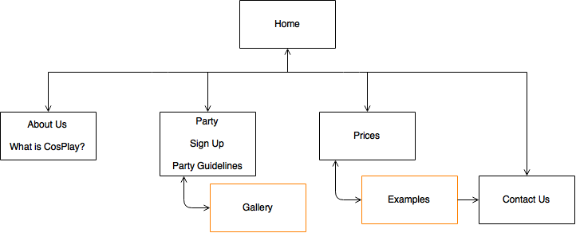

Name: Alexandra Cameron
Login: jc232507
Our mission is to increase the number of cosplayers through expanding the current age group of customers, and inturn, increase the number of costumes made per week. The site aims to inspire a younger audience to become involved with cosplaying and attended the monthly parties.
In order to evaluate the success of the site and determine if the mission is being reached, party sign ups and costume orders will need to be monitored. Therefore, when people sign up for the monthly parties, ages of attendees will be recorded. This can then be checked with information gathered on the night as people arrive and purchase their ticket. As people arrive their name can be crossed off a list that contains the information they submitted on the website. Then, after the party the list can be checked to see if the younger crowd attended.
Orders also need to be monitored. As orders are placed customers can be asked how they heard about CossiePlay. This information can be recorded and website success can be monitored.
At the end of each month this information can be evaluated to determine if the website is reaching its desired potential or if another strategy needs to be considered.
CossiePlay typically gets cosplayers between the ages of 35 and 50. However, in order to appeal to a younger audience, the target audience for this site is highschool kids and young adults (aged between 15 and 25).
The site will be intentionally designed to cater for this target audience by...
